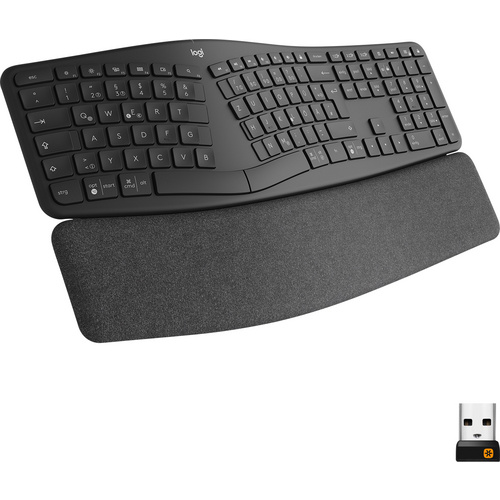

Logitech Tastatur

-
Stabilität
- Präzision
- Strapazierfähigkeit
Tasten mit gutem Anschlag: Die kreisförmigen konkaven Tasten sind auf Ihre Fingerkuppen zugeschnitten, für
ein durchgehend angenehmes Tippgefühl
Intelligente Beleuchtung: Die Hintergrundbeleuchtung wird eingeschaltet, sobald Ihre Hände die Tastatur
berühren und passt sich automatisch an wechselnde Lichtverhältnisse an
Flow-Steuerung: Das Tippen, Kopieren und Einfügen zwischen zwei Computern ist mit der MK Keys Tastatur
nahtlos möglich, erfordert allerdings die Logitech Options Software
Wiederaufladbar über USB-C: Eine vollständige Akkuladung hält bis zu 10 Tage mit und bis zu 5 Monate ohne
Hintergrundbeleuchtung (nutzungsabhängig)
Die gute Kombination: In Verbindung mit der MX Master 3 PC-Maus erleben Sie absolut nahtlose Arbeitsabläufe
Die gute Kombination: In Verbindung mit der MX Master 3 PC-Maus erleben Sie absolut nahtlose
Arbeitsabläufe
39,00€
Zurück zur Produktliste